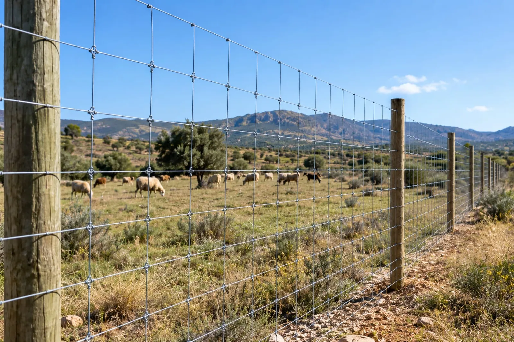
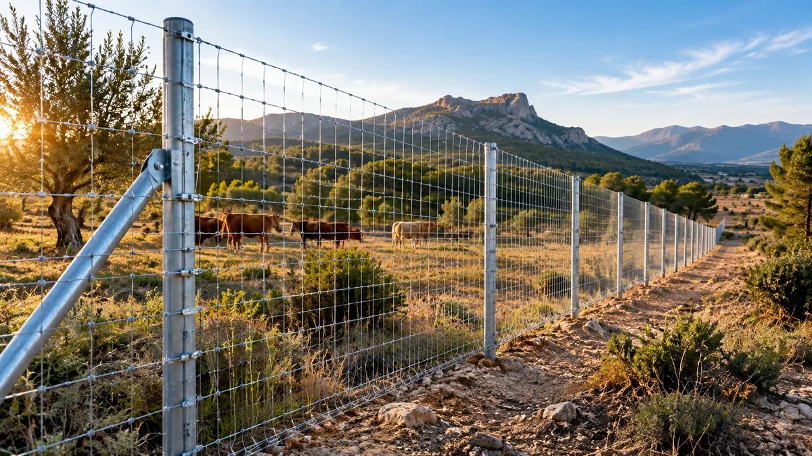
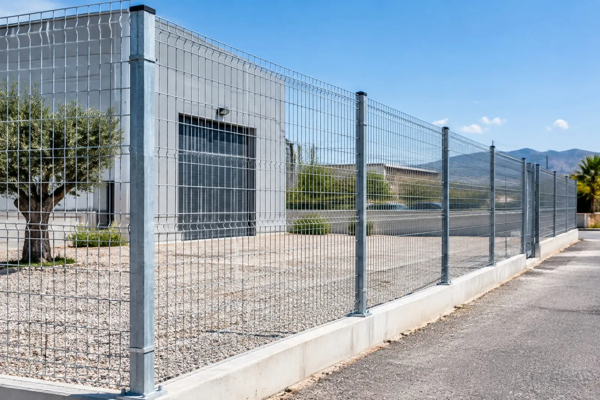
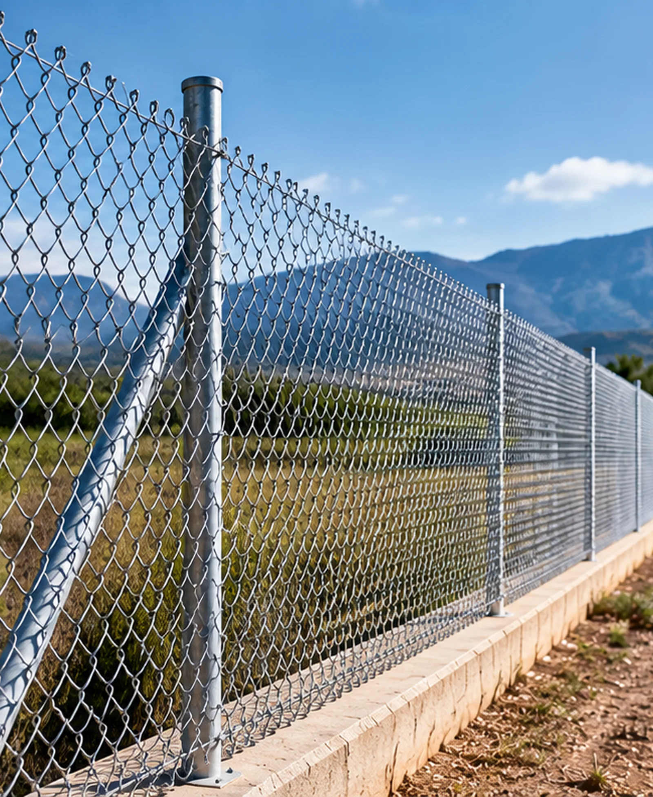
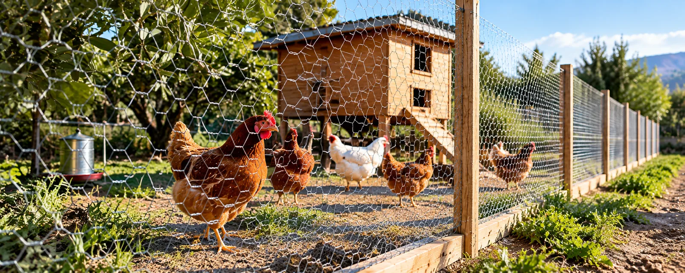
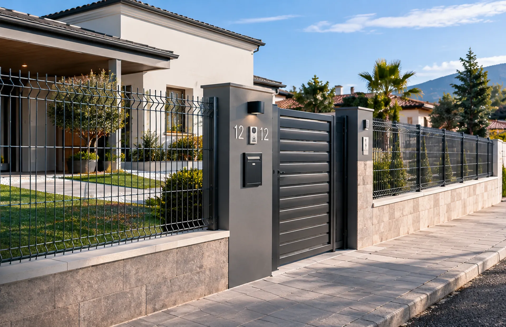
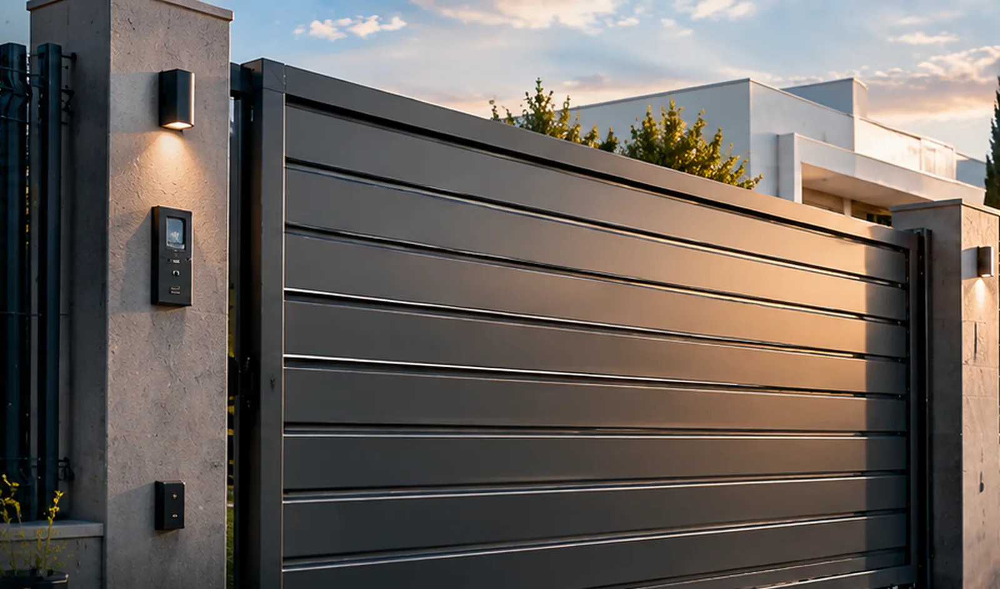

Vallado y cercados metálicos · Región de Murcia
Vallas y cercados a medida para tu finca en Murcia
Malla ganadera, cinegética, simple torsión y valla Hércules instaladas a medida según tu terreno. Presupuesto personalizado sin compromiso.
- 📏A medidasegún tu finca y terreno
- 📍Toda la Regióncapital, pedanías y comarca
- ✅Sin compromisopresupuesto gratis y cerrado

Malla ganadera
Vallado resistente para delimitar fincas y controlar el paso de ganado.
Ver más → Terrenos cinegéticos
Malla cinegética
Cumple la normativa de la Región de Murcia sobre paso de fauna silvestre.
Ver más → Más vendida
Valla Hércules
Malla galvanizada soldada de gran resistencia. Equilibrio entre precio y durabilidad.
Ver más → Económica
Malla simple torsión
La solución más extendida para delimitar parcelas, jardines y terrenos.
Ver más → Rígida y estableMalla electrosoldada
Más rígida que la simple torsión, mantiene mejor su forma con el tiempo.
Ver más → Gallineros y corrales
Malla gallinera
La opción más económica para gallineros, corrales y conejeras.
Ver más → Vivienda
Cerramiento de parcela
Vallado completo para viviendas y chalets: malla, postes y puertas.
Ver más → Acceso
Puertas para vallados
Puertas peatonales y de vehículo a juego con tu cercado, en el ancho que necesites.
Ver más →Por qué elegirnos
Vallado a medida, sin sorpresas
Medimos tu terreno
Nos desplazamos a valorar la finca o parcela antes de dar presupuesto cerrado.
Presupuesto claro
Sin sorpresas al final: material, mano de obra y desplazamiento incluidos.
Toda la Región
Trabajamos en Murcia capital y en toda la comarca, incluidas zonas rurales.
Cumplimos normativa
Vallados cinegéticos ajustados a la normativa de caza de la Región de Murcia.
Cómo funciona
En 4 pasos sencillos
Cuéntanos tu proyecto
Medidas del terreno y tipo de vallado que necesitas.
Visita si hace falta
Para fincas grandes, valoramos el terreno in situ.
Presupuesto cerrado
Precio claro antes de empezar, sin cambios después.
Instalación
Coordinamos la fecha y dejamos el vallado listo.
Cobertura
Zonas donde trabajamos
Municipios de la Región de Murcia
Pedanías de Murcia capital
Vallado profesional en toda la Región de Murcia
Malla, postes y puertas instalados a medida, con presupuesto cerrado y sin sorpresas.
Preguntas frecuentes
Dudas sobre vallado y cercados
¿Qué diferencia hay entre malla ganadera y malla cinegética?
La malla ganadera está pensada para contener animales domésticos, mientras que la cinegética sigue una normativa específica de altura y separación entre alambres para permitir el paso de fauna silvestre, obligatoria en determinados terrenos de la Región de Murcia.
¿Qué es la valla Hércules?
Es un tipo de malla metálica galvanizada soldada, muy resistente y duradera, uno de los sistemas de vallado más utilizados para fincas y parcelas en España.
¿Cuánto cuesta vallar una finca en Murcia?
Depende del tipo de malla, la longitud a vallar y el terreno. Al ser un trabajo a medida, te damos presupuesto personalizado sin compromiso tras valorar tu caso.
¿Hay que cumplir alguna normativa para vallar una finca en Murcia?
Sí, especialmente en terrenos cinegéticos: la normativa de la Región de Murcia regula la altura máxima y la separación entre alambres para no impedir el paso de la fauna silvestre no cinegética.
¿Trabajáis en toda la Región de Murcia?
Sí, atendemos Murcia capital, Molina de Segura, Alcantarilla, El Palmar, Torres de Cotillas, Fortuna, Cieza, Jumilla, Lorca y alrededores.
¿Necesitas vallar tu finca o parcela?
Presupuesto personalizado sin compromiso. Cuéntanos tu proyecto por WhatsApp.
💬 Pedir presupuesto gratis